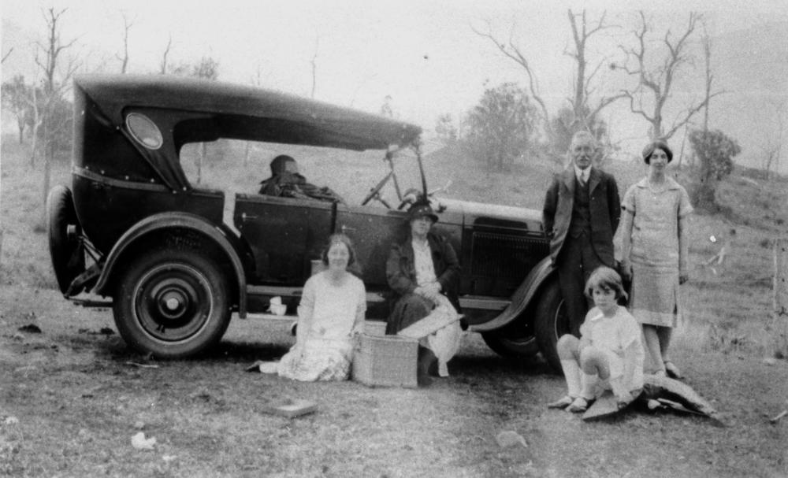
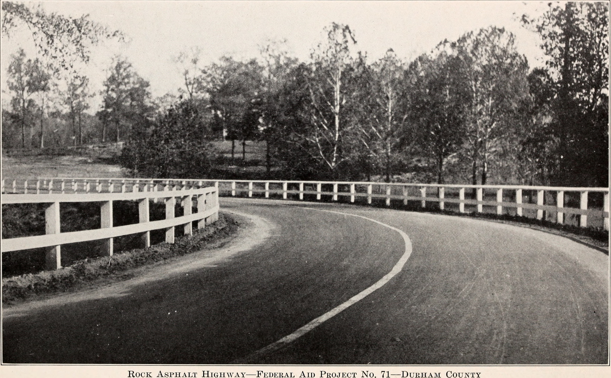
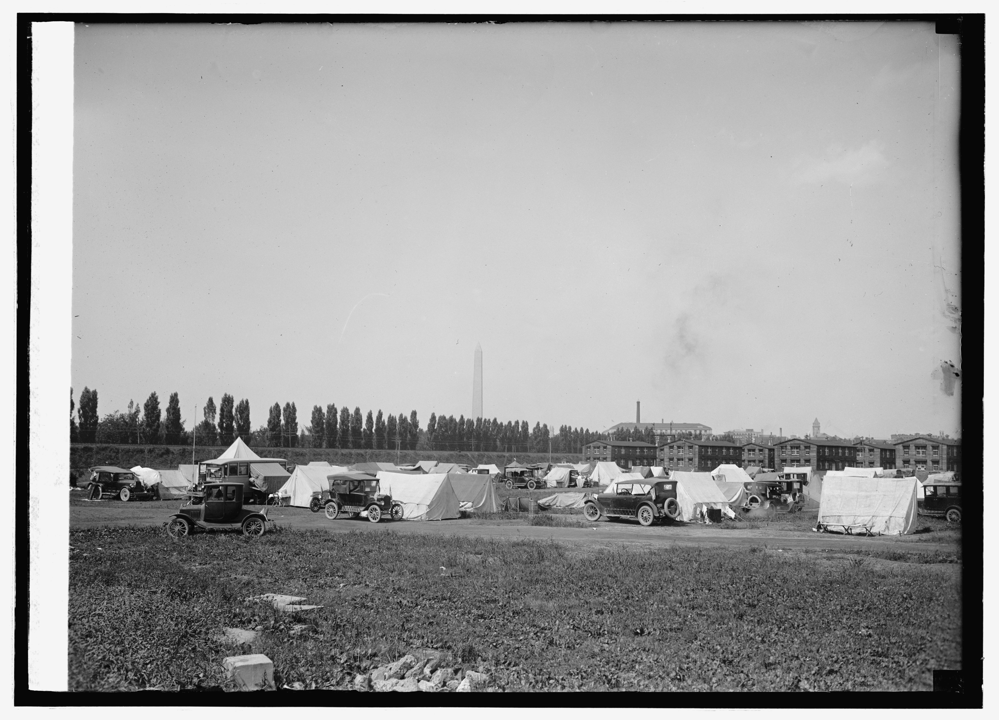
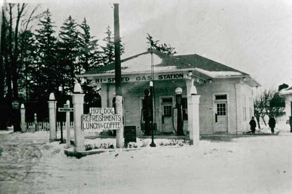

Directions: These five stations trace what followed when one representative American family bought its first car in the 1920s. The family is a composite, but every document, figure, and photograph in the stations is real or is labeled as a summary. At each station, study the evidence and answer the questions. At the end, rank the five changes the car brought by how far each one reached.
Source: Passenger car registrations in the United States, compiled from federal highway statistics. Figures are rounded.

| Year | Passenger cars registered | People per car, about |
|---|---|---|
| 1910 | 458,000 | 200 |
| 1920 | 8,132,000 | 13 |
| 1925 | 17,440,000 | 7 |
| 1929 | 23,060,000 | 5 |
In 1910 a car was still rare enough that a town might know its owners by name. By 1929 roughly one American in five could be counted against a registered car, and a family without one was beginning to feel left behind. The photograph shows the use families made of the machine once they had it: an outing, taken on the family's own schedule, to a place no timetable served.
By about how many times did registrations grow between 1920 and 1929? What two developments from the reading had to happen before ordinary families could add this many cars?
The people per car column falls from about 200 to about 5. Explain in your own words what social change that fall records, beyond the fact that factories built more cars.
Source: Photograph of a completed federal aid highway in North Carolina, published in 1922, with a labeled summary of what county road maps showed before and after paving.

Summary of the two maps. A county road map of 1920 shows a web of dirt roads running from farm to farm and into the county seat. Most are marked unimproved. In wet weather several are effectively closed, and the map's fastest route is the railroad. A map of the same county in 1929 shows one heavy line crossing the county: a numbered, paved state highway, built with federal aid and gasoline tax money. Side roads now feed into the paved line. Two villages the highway bypasses are smaller than they were in 1920. The county seat, which sits on the paved line, is larger.
What changed on the ground between the two maps, and who paid for the change? Name the two sources of money the lesson gives.
The paved line helped the county seat and hurt the bypassed villages at the same time. Explain how one road could do both.
Source: Photograph of a tourist camp in the 1920s, with a labeled summary of the services municipal tourist camps advertised.

Summary of a typical camp advertisement. By the middle of the decade, more than a thousand towns ran municipal tourist camps and advertised them to motorists. The advertisements promised a free or low cost place to stop for the night, with clean water, cooking shelters, toilets, electric light, and a watchman or police patrol. Towns advertised camps because campers bought gasoline, food, and supplies before they left in the morning. Within a few years, private owners along the same roads were renting small tourist cabins, and in 1925 the word motel was coined for lodging where a guest parked beside the room.
Why would a town spend public money to give motorists a free place to sleep? Answer from the advertisement summary, and name who in town gained.
Put the lodging in order as it developed: municipal camp, tourist cabin, motel. What did each step add that the step before it did not offer?
Source: Robert S. Lynd and Helen Merrell Lynd, Middletown: A Study in American Culture (New York: Harcourt, Brace, 1929), as reproduced in the National Humanities Center collection Becoming Modern: America in the 1920s, which modernizes punctuation and spelling for clarity. Middletown was the Lynds' name for Muncie, Indiana, which they studied in 1924 and 1925.
The Lynds compared courtship in 1890 with courtship in their own time:
Buggy-riding in 1890 allowed only a narrow range of mobility; three to eight were generally accepted hours for riding, and being out after eight-thirty without a chaperon was largely forbidden. In an auto, however, a party may go to a city halfway across the state in an afternoon or evening, and unchaperoned automobile parties as late as midnight, while subject to criticism, are not exceptional.
The Lynds also asked the students in the upper years of the Middletown high school to check the things about which they and their parents disagreed. Of 348 boys, 124 (35.6 percent) checked use of the automobile, and of 382 girls, 113 (29.6 percent) checked it. Only the hours students got in at night and the number of times they went out on school nights drew more checks.
According to the Lynds, what exactly did the automobile change about courtship? Answer with the range of a date and the supervision of a date as your two points.
Why is the disagreement table useful evidence for a historian? State what it shows that the passage about buggy riding cannot show by itself.
Source: Photograph of a filling station in the 1920s, with a summary of the roadside economy.

Before the car, a traveler bought what a trip required in a town, from businesses built for local customers. The car created a customer who bought along a road. The filling station sold that customer gasoline, oil, air, water, and repairs, and stations multiplied along the paved routes until no driver needed to carry spare fuel. Diners, tourist cabins, garages, and billboards followed the same logic, each one placed where the traffic was. The ledger had a second column. Every dollar spent on the road was a dollar not spent in a bypassed town, and streetcar companies and railroads watched their passengers leave for the private car. Roadside business was new wealth, and it was also wealth moved.
What made the filling station a new kind of business rather than an old store in a new place? Answer with the customer it served and the place it had to be.
The station text calls roadside business wealth moved as well as new wealth. Give one example of each from the lesson, and name the loser in your moved example.
Rank the five changes from 1 to 5 by how far each one reached into American life. (1 = Reached Furthest, 5 = Reached Least Far.) Reach means how many people it touched, how often, and how hard it would have been to undo.
______ Housing: the suburb, the garage, and the daily commute
______ Courtship: dating by car in place of parlor calling
______ Work: commuting and the new roadside and highway jobs
______ Leisure: tourism, tourist camps, and the motel
______ Town business: the roadside economy and the bypassed town
Defend your top choice in a short paragraph. Use specific evidence from its station, and compare it with at least one other change to show why your choice reached further.
By about how many times did registrations grow between 1920 and 1929? What two developments had to happen first? Registrations grew from about 8,132,000 to about 23,060,000, a growth of just under three times in nine years. The two developments are mass production, which cut the price of a car such as the Model T to under $300 by the middle of the decade, and installment credit, which let families buy a payment at a time. Paved roads are an acceptable third point when a student argues that families bought cars once the cars were usable in all weather.
What social change does the fall from about 200 people per car to about 5 record? The car stopped being a possession of the wealthy and became a normal expectation of family life. The fall records a change in who owned: clerks, skilled workers, and farm families, not only rich households. Strong answers add that at about five people per car, the typical family could plausibly have its own machine, so not having one began to limit where a family could live, work, court, and travel.
What changed on the ground between the two maps, and who paid? Dirt roads that closed in wet weather were replaced along the main route by a numbered, paved highway that stayed open in all seasons, and traffic reorganized itself around that line. The money came from federal aid under the Federal Aid Road Act of 1916 and the Federal Highway Act of 1921, and from state gasoline taxes, levied by every state by 1929.
How could one road help the county seat and hurt the bypassed villages at the same time? The paved line concentrated movement. Travelers, shoppers, and through traffic now passed through the county seat quickly and reliably, so its stores and services drew the county's business. The same drivers no longer needed to stop in the bypassed villages, and farm families could pass their stores entirely. One road lowered the cost of reaching the seat and raised the cost, in lost trade, of being off the route.
Why would a town spend public money to give motorists a free place to sleep? Who in town gained? The camp was an advertisement and a funnel. A town that offered water, light, and a patrol drew motorists off the road for the night, and those motorists bought gasoline, food, and supplies locally before leaving. The gainers were the town's merchants, filling stations, and food sellers, and the town itself, which competed with the next town down the road for the same travelers.
Put the lodging in order and state what each step added. Municipal tourist camp first: a place to pitch a tent or park, with water, cooking shelters, toilets, and light provided by the town. Tourist cabins second: a private roof, a bed, and a door that locked, rented by the night. Motel third, from 1925: cabin lodging organized as one business on the road, with the car parked beside the room, so the traveler never left the roadside system from fuel to bed.
What exactly did the automobile change about courtship? Range and supervision. In 1890 buggy riding ran from three to eight in the evening, within a narrow range, and being out after eight thirty without a chaperon was largely forbidden. By car, a party could reach a city halfway across the state in an afternoon or evening and stay out, unchaperoned, as late as midnight. Courtship moved out of the parlor and off the family's ground entirely.
Why is the disagreement table useful evidence? The passage describes the new practice; the table measures the friction it caused inside real families. That 124 of 348 boys and 113 of 382 girls named use of the automobile as a source of disagreement with their parents, ranking it just below hours and going out on school nights, shows the change was not only possible but contested in a large share of households. Description can be one observer's impression. A count across 730 students is harder to dismiss.
What made the filling station a new kind of business? Its customer was a driver in motion, not a resident of the town, and its location had to be on the route that driver was already traveling, at the point where fuel ran low. It sold a bundle no older store sold together: gasoline, oil, air, water, and repairs, delivered at the curb in minutes. An ordinary store waited for a town to come to it. The filling station was placed where traffic already passed.
Give one example of new wealth and one of wealth moved, naming the loser. New wealth: filling stations, diners, tourist cabins, garages, and billboard advertising, businesses with no reason to exist before drivers bought along roads. Wealth moved: farm and small town trade that shifted to larger towns on paved routes, with bypassed main street merchants as the losers; passenger revenue that shifted from streetcar companies and railroads to the private car, with the transit companies as the losers. Either pairing earns full credit when the loser is named.
Student paragraphs will vary with the ranking. Full credit should be awarded if the student: